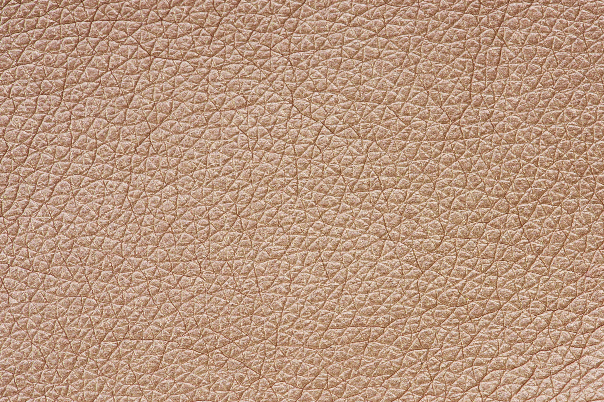
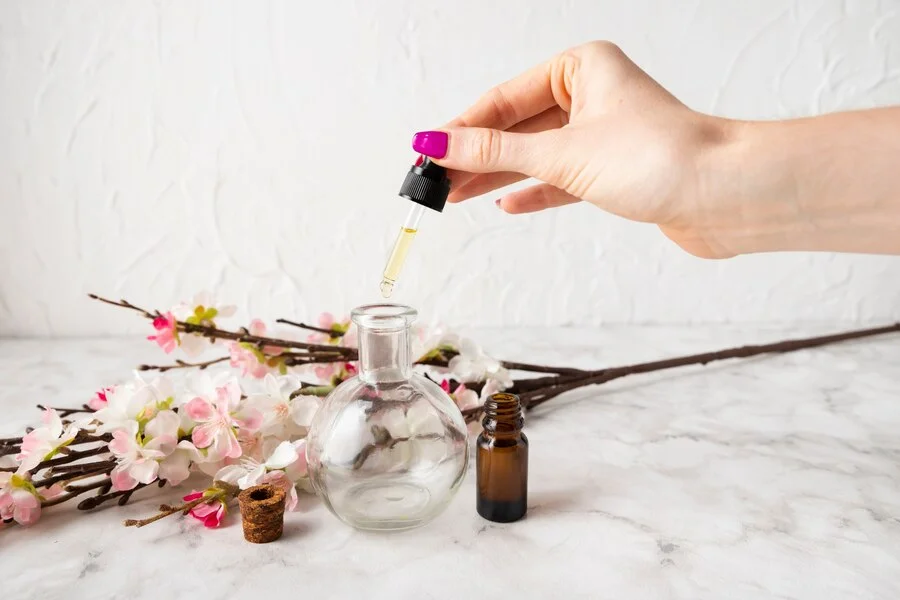
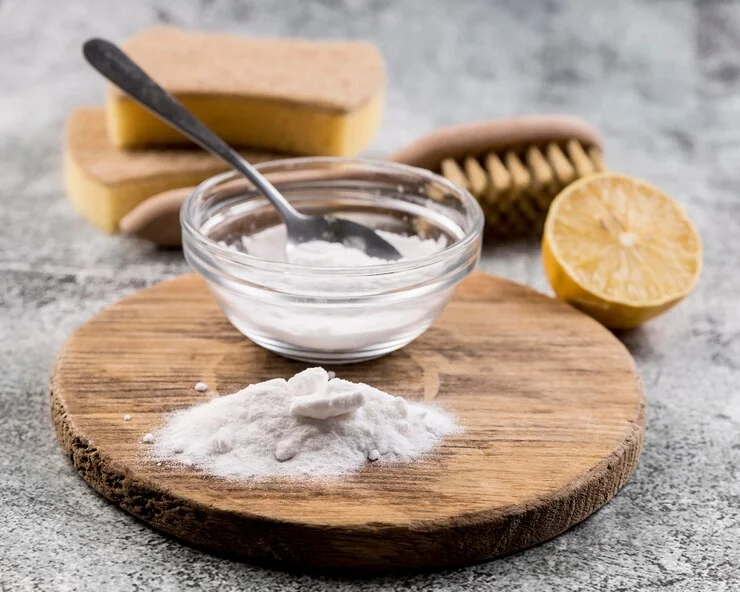
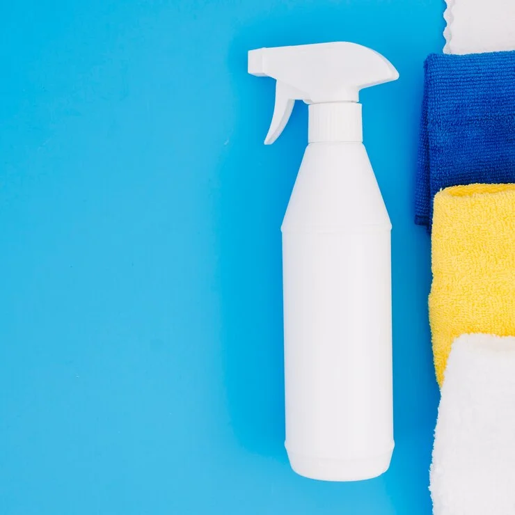

Sofa da thật là một sản phẩm cao cấp dùng thiết kế nội thất phòng khách. Nhưng qua quá trình sử dụng, sản phẩm này có thể xuất hiện mùi đặc trưng khó chịu.
Sofa da cao cấp không chỉ là một món đồ sử dụng thiết kế nội thất phòng khách, mà còn là một biểu tượng đại diện cho quyền lực, sang trọng và địa vị của gia chủ. Tuy nhiên, các gia đình có thể gặp vấn đề khi chiếc sofa da toát ra mùi hôi khó chịu sau một thời gian sử dụng.
Vậy mùi hôi này xuất phát từ đâu ra? làm cách nào để khử mùi sofa hiệu quả tại nhà? Bài viết sau đây sẽ cung cấp cho độc giả những thông tin hữu ích để giải quyết mùi hôi của sofa da theo cẩm nang thiết kế nội thất phòng khách từ chuyên gia
Vì sao những dòng sofa da xuất hiện mùi khó chịu ở nội thất phòng khách?
Mặc dù sofa da là một món nội thất sang trọng và giá trị để thiết kế nội thất phòng khách, tuy nhiên nếu gia chủ không chăm sóc và vệ sinh đúng cách, sofa rất dễ xuất hiện mùi hôi khó chịu. Mùi hôi của sofa da xuất phát từ một số nguyên nhân chính sau đây:
1. Do đặc tính của chất liệu da sử dụng khi thiết kế nội thất phòng khách
Một trong những nguyên nhân gây nên mùi hôi trên các sản phẩm nội thất được chế tác từ da tự nhiên là đặc tính của chất liệu làm sofa da. Da tự nhiên trải qua nhiều lần thuộc da để xử lý thì vẫn còn giữ lại một số yếu tố như: lỗ chân lông và một phần mỡ tự nhiên. Do vậy, khi thiết kế nội thất phòng khách, sử dụng các sản phẩm nội thất làm từ da thật lâu ngày sẽ gây mùi khó chịu.
2. Tích tụ bụi bẩn qua quá trình sử dụng
Sau một quá trình sử dụng, ghế sofa không tránh khỏi việc bị bám bụi, đặc biệt là trong những khe hở và nếp gấp của bề mặt vỏ bọc ghế. Cùng với đó, một số người có thói quen ăn uống trên ghế sofa cũng có thể vô tình rơi vãi thức ăn, nước uống lên trên ghế. Những vết bẩn này không làm sạch ngay lập tức sẽ tạo môi trường cho sự phát triển của nấm mốc và vi khuẩn, gây mùi khó chịu cho vật liệu da.
Đồng thời, trong các món nội thất được lựa chọn để thiết kế nội thất phòng khách, ghế sofa cũng là món đồ được gia chủ dùng để ngồi hằng ngày, thường xuyên tiếp xúc trực tiếp với da người ngồi. Vì vậy, một phần mồ hôi và tế bào chết trên cơ thể cũng thấm vào ghế, lâu ngày gây nên mùi hôi cho sofa.
3. Ảnh hưởng của độ ẩm từ môi trường đối với nội thất phòng khách
Một trong những nguyên nhân phổ biến gây nên mùi hôi cho sofa da không thể không kể đến là độ ẩm. Môi trường ẩm ướt tạo điều kiện lý tưởng để nấm mốc và vi khuẩn phát triển, từ đó gây mùi hôi cho món nội thất này.
4. Vệ sinh sai cách nội thất
Một trong những nguyên nhân trực tiếp dẫn đến mùi hôi cho sofa da là do vệ sinh không đúng cách. Gia chủ vệ sinh sofa nhưng vô tình sử dụng nước quá nhiều, hoặc sử dụng những sản phẩm vệ sinh không phù hợp có thể gây nên mùi hóa chất khó chịu.
Không những thế, việc sử dụng hóa chất không phù hợp với chất liệu có thể làm hư hại nghiêm trọng đến sofa da, ảnh hưởng đến thẩm mỹ của phong cách thiết kế nội thất phòng khách.
Sau khi vệ sinh, nhiều gia đình bỏ qua bước làm khô sofa. Việc tồn đọng nước hoặc hóa chất trên bề mặt ghế sau khi vệ sinh có thể vô tình làm sofa bị ẩm và tạo cơ hội cho nấm mốc phát triển, dẫn đến tình trạng mùi hôi của nội thất càng nghiêm trọng hơn.
Hiểu rõ những nguyên nhân gây mùi trên ghế sofa da giúp bạn có biện pháp phòng ngừa và xử lý mùi hôi hiệu quả hơn khi thiết kế nội thất phòng khách.
Cẩm nang thiết kế nội thất phòng khách: Cách xử lý khi ghế sofa da có mùi hôi?
Cách 1: Sử dụng tinh dầu
Để ngăn mùi hôi, cách hữu hiệu nhất là sử dụng một mùi thơm tự nhiên để khử mùi. Tinh dầu là sản phẩm được lựa chọn phổ biến để khử mùi hôi sofa khi thiết kế nội thất phòng khách. Một số loại tinh dầu chiết xuất từ các loại thảo mộc tự nhiên như lavender, sả chanh, quế,… được nhiều gia chủ ưa chuộng. Đặc biệt, việc sử dụng tinh dầu khi thiết kế nội thất phòng khách còn thể hiện được sự sang trọng và dấu ấn cá nhân về sở thích riêng biệt của gia chủ. Đồng thời, mùi hương phảng phất trong không gian cũng mang lại cảm giác thư giãn, thoải mái cho chủ nhà.
Cách thực hiện
- Tùy vào sở thích của từng cá nhân, lựa chọn mùi tinh dầu ưa thích để khử mùi hôi, đồng thời tạo điểm nhấn về cảm giác khi thiết kế nội thất phòng khách.
– Pha loãng tinh dầu với nước theo tỷ lệ: 10 giọt tinh dầu với 200ml nước.
– Cho tinh dầu vào trong bình xịt. Xịt đều sao cho dung dịch được phân tán đều lên bề mặt ghế.
– Lau lại toàn bộ bề mặt ghế bằng khăn mềm.
Lưu ý
– Nên thử nghiệm dung dịch tinh dầu loãng trên một góc của ghế sofa da trước khi sử dụng trên toàn bộ bề mặt.
– Cần pha loãng tinh dầu, không nên xịt trực tiếp tinh dầu lên da ghế vì có thể gây nên phản ứng làm hư tổn da.
– Sau khi xịt tinh dầu, gia chủ nên mở rộng các cửa để phòng khách thông thoáng, đảm bảo mùi hương nhẹ nhàng và dễ chịu nhất.
Cách 2: Sử dụng vỏ cam, quýt
Một trong những loại tinh dầu tự nhiên có mùi hương thanh mát, nhẹ nhàng được nhiều người sử dụng để làm thơm không gian sống, phải kể đến các loại tinh dầu trong vỏ cam, quýt. Đồng thời, vỏ cam, quýt cũng có khả năng hút ẩm hiệu quả, phù hợp để khử mùi hôi sofa khi thiết kế nội thất phòng khách.
Cách thực hiện
– Vỏ cam quýt cần rửa sạch và phơi khô trước khi sử dụng.
– Đặt vỏ cam quýt ở những vị trí phát ra mùi hôi ở sofa. Bạn có thể đặt trực tiếp vỏ cam quýt lên ghế hoặc cho vào các túi vải để đặt bên cạnh sofa.
– Cần quan sát, kiểm tra và thay vỏ cam quýt sau vài ngày. Vỏ cam quýt khi quá khô sẽ mất dần hiệu quả khử mùi. Bên cạnh đó, vỏ cam quýt có thể bị mốc nếu bị bỏ quên lâu ngày trong các góc khuất của ghế sofa.
Lưu ý
– Gia chủ có thể sử dụng kết hợp vỏ cam quýt với vỏ của các loại quả có múi giàu tinh dầu khác như chanh, bưởi để đảm bảo khử mùi hiệu quả.
– Gia chủ có thể khéo léo cắt lát cam, quýt thành nhưng chi tiết trang trí độc đáo để vừa đảm bảo khử mùi hôi cho nội thất da, vừa có tác dụng “decor”, làm tăng tính thẩm mỹ cho phong cách thiết kế nội thất phòng khách.
Cách 3: Sử dụng baking soda
Một trong những sản phẩm tự nhiên có tác dụng tẩy rửa hiệu quả và lành tính là baking soda. Đây cũng là sản phẩm hữu hiệu để đánh bay vi khuẩn, nấm mốc, vết bẩn cứng đầu, khử mùi hôi cho sofa da.
Cách thực hiện
– Rắc đều baking soda trực tiếp lên bề mặt ghế sofa, đặc biệt là những nơi có mùi hôi nặng nhất. Giữ nguyên baking soda trên bề mặt chất liệu trong khoảng vài tiếng để thấm hút và khử mùi hôi.
– Sử dụng máy hút bụi để hút sạch phần baking soda còn lại.
– Lau sạch bề mặt bằng khăn mềm.
Lưu ý
– Nên chọn baking soda mịn để tránh làm xước da ghế, gây mất thẩm mỹ cho phong cách thiết kế nội thất phòng khách.
– Gia chủ có thể sử dụng baking soda kết hợp cùng tinh dầu để khử mùi hiệu quả hơn.
– Tránh lạm dụng baking soda quá mức vì chúng có thể gây khô da ghế.
Cách 4: Sử dụng giấm trắng
Bên cạnh baking soda, giấm cũng là một chất có tác dụng tẩy rửa và khử mùi hôi hiệu quả. Tuy nhiên, khi sử dụng giấm trắng để vệ sinh ghế sofa da, gia chủ nên pha loãng giấm để tránh phản ứng mạnh gây ảnh hưởng đến chất lượng của chất liệu da sử dụng trong thiết kế nội thất phòng khách.
cách thực hiện
– Pha loãng giấm trắng với nước theo tỷ lệ 1:1.
– Cho dung dịch vào bình xịt dạng phun sương. Xịt đều dung dịch lên bề mặt ghế, đặc biệt là những nơi có mùi hôi nặng nhất.
– Lau lại toàn bộ ghế bằng khăn mềm. Tránh sử dụng lực mạnh có thể gây xước hỏng da ghế, ảnh hưởng đến tính thẩm mỹ của phong cách thiết kế nội thất phòng khách.
Lưu ý
– Nên thử nghiệm dung dịch giấm loãng trên một góc của ghế sofa trước khi sử dụng cho toàn bộ bề mặt.
– Luôn sử dụng giấm pha loãng, không xịt trực tiếp giấm đặc lên vỏ bọc ghế da.
– Sau khi vệ sinh, cần lau khô ghế thật kỹ đảm bảo da ghế hoàn toàn khô thoáng.
Cách 5: Sử dụng sản phẩm khử mùi chuyên dụng cho ghế sofa da
Đối với các dòng ghế sofa da cao cấp, để đảm bảo an toàn cho chất liệu, gia chủ nên sử dụng các sản phẩm khử mùi chuyên dụng. Mỗi loại da khác nhau sẽ có một sản phẩm khử mùi đặc trị khác nhau. Gia chủ nên hỏi trực tiếp đơn vị tư vấn thiết kế nội thất phòng khách để biết rõ thông tin về loại da sử dụng làm vỏ bọc sofa, cũng như các sản phẩm chuyên dụng được khuyến nghị sử dụng để vệ sinh vỏ ghế, để có sự lựa chọn đúng đắn.
Cách thực hiện
– Đọc kỹ hướng dẫn sử dụng trước khi dùng dung dịch vệ sinh trên bề mặt ghế.
– Dùng khăn mềm và nước ấm làm sạch bề mặt trước khi sử dụng sản phẩm khử mùi. Sau đó, để bề mặt sofa khô hoàn toàn trước khi sử dụng sản phẩm vệ sinh.
– Xịt hoặc thoa đều dung dịch vệ sinh sofa lên bề mặt ghế, tùy vào hướng dẫn sử dụng của sản phẩm.
– Dùng khăn mềm và nước ấm lau lại ghế sofa da để loại bỏ cặn thừa của sản phẩm khử mùi. Để sofa khô tự nhiên hoàn toàn trước khi sử dụng.
Lưu ý
– Không sử dụng sản phẩm vệ sinh có chứa chất tẩy rửa mạnh vì có thể làm hỏng da ghế.
– Nên sử dụng sản phẩm chuyên dụng để vệ sinh ghế định kỳ để tránh tồn đọng vi khuẩn, đảm bảo ghế sofa luôn sạch sẽ, thơm tho, xứng đáng là điểm nhấn hoàn hảo cho nghệ thuật thiết kế nội thất phòng khách.